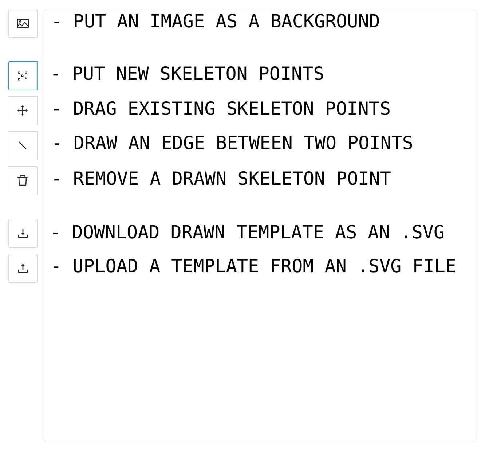
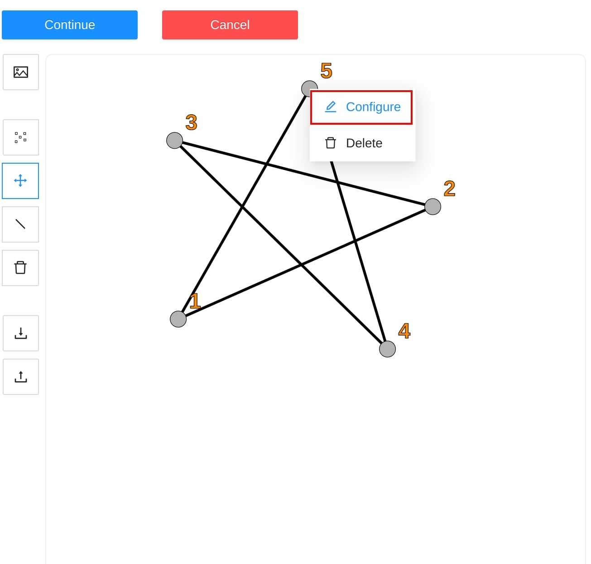
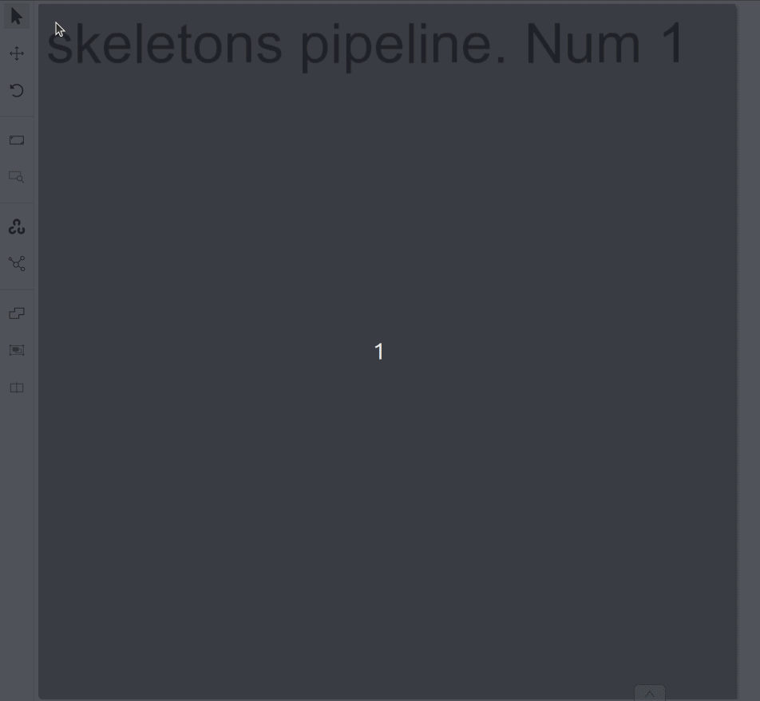

Annotation with skeletons
Guide to creating and editing skeletons.
Skeletons should be used as annotations templates when you need to annotate complex objects sharing the same structure
(e.g. human pose estimation, facial landmarks, etc.).
A skeleton consist of any number of points (also called as elements), joined or not joined by edges.
Any point itself is considered like an individual object with its own attributes and properties
(like color, occluded, outside, etc). At the same time a skeleton point can exist only within the parent skeleton.
Any skeleton elements can be hidden (by marking them outside) if necessary (for example if a part is out of a frame).
Currently there are two formats which support exporting skeletons: CVAT & COCO.
1 - Creating the skeleton
Initial skeleton setup
Unlike other CVAT objects, to start annotating using skeletons, first of all you need to setup a skeleton.
You can do that in the label configurator during creating a task/project, or later in created instances.
So, start by clicking Setup skeleton option:
Below the regular label form where you need to add a name, and setup attributes if necessary,
you will see a drawing area with some buttons aside:

- PUT AN IMAGE AS A BACKGROUND - is a helpful feature you can use to draw a skeleton template easier,
seeing an example - object you need to annotate in the future.
- PUT NEW SKELETON POINTS - is activated by default.
It is a mode where you can add new skeleton points clicking the drawing area.
- DRAW AN EDGE BETWEEN TWO POINTS - in this mode you can add an edge,
clicking any two points, which are not joined yet.
- REMOVE A DRAWN SKELETON POINTS - in this mode clicking a point will remove the point and all attached edges.
You can also remove an edge only, it will be highligted as red on hover.
- DOWNLOAD DRAWN TEMPLATE AS AN .SVG - you can download setup configuration to use it in future
- UPLOAD A TEMPLATE FROM AN .SVG FILE - you can upload previously downloaded configuration
Let’s draw an exampe skeleton - star. After the skeleton is drawn, you can setup each its point.
Just hover the point, do right mouse click and click Configure:

Here you can setup a point name, its color and attributes if necessary like for a regular CVAT label:
Press Done button to finish editing the point. Press Continue button to save the skeleton.
Continue creating a task/project in a regular way.
For an existing task/project you are not allowed to change a skeleton configuration for now.
You can copy/insert skeletons configuration using Raw tab of the label configurator.
Drawing a skeleton from rectangle
In opened job go to left sidebar and find Draw new skeleton control, hover it:
If the control is absent, be sure you have setup at least one skeleton in the corresponding task/project.
In a pop-up dropdown you can select between a skeleton Shape and a skeleton Track, depends on your task.
Draw a skeleton as a regular bounding box, clicking two points on a canvas:

Well done, you’ve just created the first skeleton.
2 - Editing the skeleton
Editing skeletons on the canvas
A drawn skeleton is wrapped by a bounding box for a user convenience.
Using this wrapper the user can edit the skeleton as a regular bounding box, by dragging, resizing, or rotating:
Moreover, each the skeleton point can be dragged itself. After dragging, the wrapping bounding box is
adjusted automatically, other points are not affected:

You can use Shortcuts on both a skeleton itself and its elements.
- Hover the mouse cursor over the bounding box to apply a shortcut on the whole skeleton
(like lock, occluded, pinned, keyframe and outside for skeleton tracks)
- Hover the mouse cursor over one of skeleton points to apply a shortcut to this point
(the same shortcuts list, but outside is available also for a skeleton shape elements)
Using the sidebar is another way to setup skeleton properties, and attributes.
It works a similar way, like for other kinds of objects supported by CVAT, but with some changes:
- A user is not allowed to switch a skeleton label
Outside property is always available for skeleton elements (it does not matter if they are tracks or not)- Additional collapse is available for a user, to see a list of skeleton parts